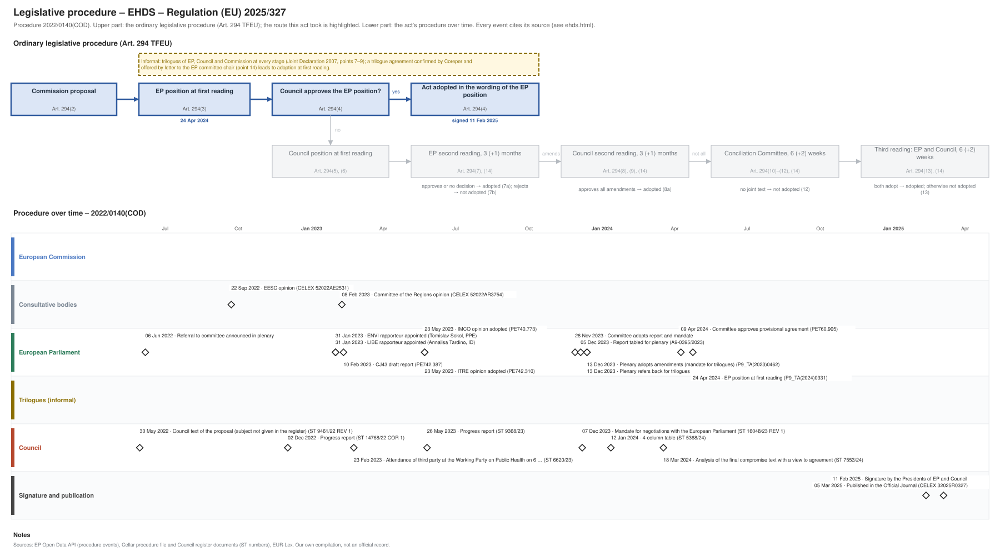

← Regulation timeline › EHDS › Legislative procedure · All procedures
Procedure 2022/0140(COD), completed. Drawing: SVG · PNG · PDF (A3) · draw.io · Page as Markdown: ehds.md
| Stage | Completed, published 05 Mar 2025 |
|---|---|
| Route (Art. 294 TFEU) | Agreement at first reading: the Council approved the EP position |
| Latest activity | 05 Mar 2025 · Signature and publication: Published in the Official Journal (CELEX 32025R0327) |

| Committee | Role | Rapporteur | Shadow rapporteurs |
|---|---|---|---|
| ENVI Environment, Climate and Food Safety | Responsible | Tomislav Sokol (EPP), appointed 31 Jan 2023 | Sara Cerdas (S&D), Susana Solís Pérez (Renew), Tilly Metz (Greens/EFA), Joanna Kopcińska (ECR), Sylvia Limmer (ID), Kateřina Konečná (The Left) |
| LIBE Civil Liberties, Justice and Home Affairs | Responsible | Annalisa Tardino (ID), appointed 31 Jan 2023 | Javier Zarzalejos (EPP), Petar Vitanov (S&D), Lucia Ďuriš Nicholsonová (Renew), Patrick Breyer (Greens/EFA), Beata Kempa (ECR), Konstantinos Arvanitis (The Left) |
| BUDG Budgets | Opinion | not yet appointed | – |
| IMCO Internal Market and Consumer Protection | Role not given | Andrey Kovatchev (EPP), appointed 08 Jul 2022 | – |
| ITRE Industry, Research and Energy | Role not given | Cristian-Silviu Buşoi (EPP), appointed 09 Jun 2022 | – |
Source: EP Open Data API (participations) and the Legislative Observatory (joint committee, opinions declined); names link to each Member's page on the EP website. The API names no committee for shadow rapporteurs; they are assigned by the EP's order of participants, which groups each committee.
| Date | Actor | Event | Document | Source |
|---|---|---|---|---|
| 2022-05-03 | European Commission | Commission proposal (Art. 294(2) TFEU) | COM(2022) 197 | Cellar procedure file 2022/140 (CELEX 52022PC0197) |
| 2022-05-30 | Council | Council text of the proposal (subject not given in the register) | ST 9461/22 REV 1 | Cellar procedure file 2022/140 (Council register) |
| 2022-06-06 | European Parliament | Referral to committee announced in plenary | EP procedure file | EP Open Data API, procedure 2022-0140 (REFERRAL) |
| 2022-09-22 | Consultative bodies | EESC opinion | CELEX 52022AE2531 | Cellar procedure file 2022/140 |
| 2022-12-02 | Council | Progress report | ST 14768/22 COR 1 | Cellar procedure file 2022/140 (Council register) |
| 2023-01-31 | European Parliament | ENVI rapporteur appointed (Tomislav Sokol, PPE) | EP procedure file | EP Open Data API, procedure 2022-0140 (participation RAPPORTEUR) |
| 2023-01-31 | European Parliament | LIBE rapporteur appointed (Annalisa Tardino, ID) | EP procedure file | EP Open Data API, procedure 2022-0140 (participation RAPPORTEUR) |
| 2023-02-08 | Consultative bodies | Committee of the Regions opinion | CELEX 52022AR3754 | Cellar procedure file 2022/140 |
| 2023-02-10 | European Parliament | CJ43 draft report | PE742.387 | EP Open Data API, procedure 2022-0140 (COMMITTEE_TABLING_REPORT) |
| 2023-02-23 | Council | Attendance of third party at the Working Party on Public Health on 6 … | ST 6620/23 | Cellar procedure file 2022/140 (Council register) |
| 2023-05-23 | European Parliament | ITRE opinion adopted | PE742.310 | EP Open Data API, procedure 2022-0140 (COMMITTEE_ADOPTING_OPINION) |
| 2023-05-23 | European Parliament | IMCO opinion adopted | PE740.773 | EP Open Data API, procedure 2022-0140 (COMMITTEE_ADOPTING_OPINION) |
| 2023-05-26 | Council | Progress report | ST 9368/23 | Cellar procedure file 2022/140 (Council register) |
| 2023-11-28 | European Parliament | Committee adopts report and mandate | EP procedure file | EP Open Data API, procedure 2022-0140 (COMMITTEE_ADOPTING_REPORT) |
| 2023-12-05 | European Parliament | Report tabled for plenary | A9-0395/2023 | EP Open Data API, procedure 2022-0140 (TABLING_PLENARY) |
| 2023-12-07 | Council | Mandate for negotiations with the European Parliament | ST 16048/23 REV 1 | Cellar procedure file 2022/140 (Council register) |
| 2023-12-13 | European Parliament | Plenary adopts amendments (mandate for trilogues) | P9_TA(2023)0462 | EP Open Data API, procedure 2022-0140 (PLENARY_AMEND) |
| 2023-12-13 | European Parliament | Plenary refers back for trilogues | EP procedure file | EP Open Data API, procedure 2022-0140 (PLENARY_REFER_COMMITTEE_INTERINSTITUTIONAL_NEGOTIATIONS) |
| 2024-01-12 | Council | 4-column table | ST 5368/24 | Cellar procedure file 2022/140 (Council register) |
| 2024-03-18 | Council | Analysis of the final compromise text with a view to agreement | ST 7553/24 | Cellar procedure file 2022/140 (Council register) |
| 2024-04-09 | European Parliament | Committee approves provisional agreement | PE760.905 | EP Open Data API, procedure 2022-0140 (COMMITTEE_APPROVE_PROVISIONAL_AGREEMENT) |
| 2024-04-24 | European Parliament | EP position at first reading (Art. 294(3) TFEU) | P9_TA(2024)0331 | EP Open Data API, procedure 2022-0140 (PLENARY_AMEND_PROPOSAL) |
| 2025-02-11 | Signature and publication | Signature by the Presidents of EP and Council | EP procedure file | EP Open Data API, procedure 2022-0140 (SIGNATURE) |
| 2025-03-05 | Signature and publication | Published in the Official Journal | CELEX 32025R0327 · en.md de.md | EP Open Data API, procedure 2022-0140 (PUBLICATION_OFFICIAL_JOURNAL) |
Every document the Council register, the EU database of the Parliament of Austria or the EP lists for the procedure, with its state: public documents link to the official file; documents that are not public link to their entry in the Austrian database where there is one (metadata only). Status: public; not public; not public, leak available (an unofficial copy is known to circulate outside the institutions; it is neither published nor quoted here). Released: when a document listed as not public was released, by the date of the Council's public PDF (a technical date) or else the day our daily check found it public.
| Date | Document | Kind | Subject | Status | Released | Text |
|---|---|---|---|---|---|---|
| 2022-05-06 | ST 8751/22 | council-transmission | Proposal for a REGULATION OF THE EUROPEAN PARLIAMENT AND OF THE COUNCIL on the European Health Data Space | public status unknown | – | – |
| 2022-05-06 | ST 8751/22 ADD 1 | council-transmission | ANNEXES to the REGULATION OF THE EUROPEAN PARLIAMENT AND OF THE COUNCIL on the European Health Data Space | public status unknown | – | – |
| 2022-05-06 | ST 8751/22 ADD 2 | council-transmission | COMMISSION STAFF WORKING DOCUMENT SUBSIDIARITY GRID Accompanying the document PROPOSAL FOR A REGULATION OF THE EUROPEAN PARLIAMENT AND OF THE COUNCIL on the … | public status unknown | – | – |
| 2022-05-06 | ST 8751/22 ADD 3 | council-transmission | COMMISSION STAFF WORKING DOCUMENT IMPACT ASSESSMENT REPORT Accompanying the document PROPOSAL FOR A REGULATION OF THE EUROPEAN PARLIAMENT AND OF THE COUNCIL on … | public status unknown | – | – |
| 2022-05-06 | ST 8751/22 ADD 4 | council-transmission | COMMISSION STAFF WORKING DOCUMENT IMPACT ASSESSMENT REPORT Accompanying the document PROPOSAL FOR A REGULATION OF THE EUROPEAN PARLIAMENT AND OF THE COUNCIL on … | public status unknown | – | – |
| 2022-05-06 | ST 8751/22 ADD 5 | council-transmission | COMMISSION STAFF WORKING DOCUMENT IMPACT ASSESSMENT REPORT Accompanying the document PROPOSAL FOR A REGULATION OF THE EUROPEAN PARLIAMENT AND OF THE COUNCIL on … | public status unknown | – | – |
| 2022-05-06 | ST 8751/22 ADD 6 | council-transmission | COMMISSION STAFF WORKING DOCUMENT IMPACT ASSESSMENT REPORT Accompanying the document PROPOSAL FOR A REGULATION OF THE EUROPEAN PARLIAMENT AND OF THE COUNCIL on … | public status unknown | – | – |
| 2022-05-06 | ST 8751/22 ADD 7 | council-transmission | COMMISSION STAFF WORKING DOCUMENT EXECUTIVE SUMMARY OF THE IMPACT ASSESSMENT REPORT Accompanying the document PROPOSAL FOR A REGULATION OF THE EUROPEAN … | public status unknown | – | – |
| 2022-05-06 | ST 8751/22 ADD 8 | council-transmission | REGULATORY SCRUTINY BOARD OPINION Proposal for a Regulation of the European Parliament and of the Council on the European Health Data Space | public status unknown | – | – |
| 2022-05-06 | ST 8828/22 | council-transmission | COMMUNICATION FROM THE COMMISSION TO THE EUROPEAN PARLIAMENT AND THE COUNCIL A European Health Data Space: harnessing the power of health data for people, … | public status unknown | – | – |
| 2022-05-30 | ST 9461/22 REV 1 | council-text | Proposal for a Regulation on the European Health Data Space | public | – | – |
| 2022-06-23 | ST 10566/22 | council-text | not public* | – | – | |
| 2022-07-14 | ST 11351/22 | council-transmission | Joint Opinion of the European Data Protection Board and the European Data Protection Supervisor on the Proposal for a regulation on the European Health Data … | public status unknown | – | – |
| 2022-09-12 | ST 12223/22 | council-transmission | Opinion on the application of the Principles of Subsidiarity and Proportionality | public status unknown | – | – |
| 2022-09-22 | CELEX 52022AE2531 | opinion | Opinion of the European Economic and Social Committee on the Communication from the Commission to the European Parliament and the Council — A European Health … | public | – | – |
| 2022-09-27 | ST 12883/22 | council-transmission | Opinion of the European Economic and Social Committee | public status unknown | – | – |
| 2022-09-28 | ST 12883/22 COR 1 | council-note | Opinion of the European Economic and Social Committee | public status unknown | – | – |
| 2022-10-20 | ST 13814/22 | council-transmission | Opinion on the application of the Principles of Subsidiarity and Proportionality | public status unknown | – | – |
| 2022-10-20 | ST 13836/22 | council-transmission | Opinion on the application of the Principles of Subsidiarity and Proportionality | public status unknown | – | – |
| 2022-12-02 | ST 14768/22 COR 1 | council-progress-report | Progress report | public | – | – |
| 2022-12-07 | ST 14768/22 COR 1 REV 1 | council-text | not public* | – | – | |
| 2023-02-08 | CELEX 52022AR3754 | opinion | Opinion of the European Committee of the Regions on the European Health Data Space | public | – | – |
| 2023-02-08 | PE740.773 | ep-draft-opinion | DRAFT OPINION on the proposal for a regulation of the European Parliament and of the Council on the European Health Data Space | public | – | – |
| 2023-02-10 | PE742.387 | ep-draft-report | DRAFT REPORT on the proposal for a regulation of the European Parliament and of the Council on the European Health Data Space | public | – | – |
| 2023-02-14 | PE742.310 | ep-draft-opinion | DRAFT OPINION on the proposal for a regulation of the European Parliament and of the Council on European Health Data Space | public | – | – |
| 2023-02-15 | ST 6403/23 | council-transmission | Opinion of the European Committee of the Regions | public status unknown | – | – |
| 2023-02-17 | ST 6403/23 COR 1 | council-transmission | Opinion of the European Committee of the Regions | public status unknown | – | – |
| 2023-02-23 | ST 6620/23 | council-item-note | Attendance of third party at the Working Party on Public Health on 6 March 2023 - Approval | public status unknown | – | – |
| 2023-03-29 | PE745.527 | ep-amendments | public status unknown | – | – | |
| 2023-03-29 | PE745.528 | ep-amendments | public status unknown | – | – | |
| 2023-03-29 | PE745.529 | ep-amendments | public status unknown | – | – | |
| 2023-03-29 | PE745.530 | ep-amendments | public status unknown | – | – | |
| 2023-03-29 | PE745.531 | ep-amendments | public status unknown | – | – | |
| 2023-03-29 | PE745.532 | ep-amendments | public status unknown | – | – | |
| 2023-04-05 | PE745.471 | ep-amendments | public status unknown | – | – | |
| 2023-04-05 | PE745.533 | ep-amendments | public status unknown | – | – | |
| 2023-05-23 | PE742.310 | ep-opinion | OPINION on the proposal for a regulation of the European Parliament and of the Council on European Health Data Space | public | – | – |
| 2023-05-25 | PE740.773 | ep-opinion | OPINION on the proposal for a regulation of the European Parliament and of the Council on the European Health Data Space | public | – | – |
| 2023-05-26 | ST 9368/23 | council-progress-report | Progress report | public | – | – |
| 2023-12-05 | A9-0395/2023 | ep-report | REPORT on the proposal for a regulation of the European Parliament and of the Council on the European Health Data Space | public | – | – |
| 2023-12-07 | ST 16048/23 REV 1 | council-position | Mandate for negotiations with the European Parliament | public | – | – |
| 2023-12-13 | P9_TA(2023)0462 | ep-position | European Health Data Space | public | – | – |
| 2024-01-12 | ST 5368/24 | trilogue | 4-column table | public | – | – |
| 2024-03-18 | ST 7553/24 | agreed-text | Analysis of the final compromise text with a view to agreement | public | – | – |
| 2024-03-22 | PE760.905 | agreed-text | PROVISIONAL AGREEMENT RESULTING FROM INTERINSTITUTIONAL NEGOTIATIONS Proposal for a regulation the European Parliament and the Council of the European Union on … | public | – | – |
| 2024-03-22 | ST 7567/24 | council-note | Letter to the Chairs of the European Parliament Committees on Environment, Public Health and Food Safety (ENVI) and on Civil Liberties, Justice and Home … | public status unknown | – | – |
| 2024-04-24 | P9_TA(2024)0331 | ep-position | European Health Data Space | public | – | – |
| 2024-06-18 | ST 10078/24 | council-note | Proposals under the ordinary legislative procedure expected to undergo the Corrigendum Procedure in the European Parliament (part I) | public status unknown | – | – |
| 2024-07-25 | PE 76/24 | council-note | REGULATION OF THE EUROPEAN PARLIAMENT AND OF THE COUNCIL on the European Health Data Space and amending Directive 2011/24/EU and Regulation (EU) 2024/2847 | public status unknown | – | – |
| 2025-01-10 | ST 5142/25 | council-note | Draft REGULATION OF THE EUROPEAN PARLIAMENT AND OF THE COUNCIL on the European Health Data Space and amending Directive 2011/24/EU and Regulation (EU) … | public status unknown | – | – |
| 2025-01-14 | ST 5142/25 ADD 1 REV 1 | council-note | Draft REGULATION OF THE EUROPEAN PARLIAMENT AND OF THE COUNCIL on the European Health Data Space and amending Directive 2011/24/EU and Regulation (EU) … | public status unknown | – | – |
| 2025-01-21 | ST 5541/25 | council-note | Voting result REGULATION OF THE EUROPEAN PARLIAMENT AND OF THE COUNCIL on the European Health Data Space and amending Directive 2011/24/EU and Regulation (EU) … | public status unknown | – | – |
* Not public: the registers are checked again daily until the document is released; last check 2026-10-08.
Unofficial Markdown conversions for reading, searching and project folders; only the official document is authentic. "Read" opens the rendered text on GitHub, where a link to a provision (#art-13, #rec-12, #annex-i) jumps to it.
| Date | Stage | Document | Markdown | Read |
|---|---|---|---|---|
| 2025-03-05 | oj | CELEX 32025R0327 | en de | GitHub |
Comitology committees of Member State representatives give opinions on draft implementing acts (Regulation (EU) No 182/2011); expert groups advise the Commission on delegated acts, guidance and implementation; groups set up by an act itself (e.g. the NIS Cooperation Group) bring together the Member States, the Commission and agencies. Meetings and documents as published in the Comitology Register, the Register of Commission expert groups and on the Commission's pages of these groups, from 2024 on.
Comitology committee C131500, SANTE; examination procedure (Art. 5, 6 and 7 of Regulation (EU) No 182/2011). Official source: Comitology Register ↗